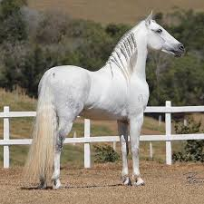

El Mangalarga Marchador surgió en Brasil, al sur del Estado deMinas Gerais. Descendiente del caballo Alter, raza traída a Brasil por el rey João VI, cuando la corte portuguesa se trasladó a Brasil, a principios del siglo XIX. Tiene como principal característica la marcha batida, que es distinta de las otras encontradas en los demáscaballos de marcha del mundo.
Traducción del inglés-El Mangalarga Marchador es una raza brasileña de equitación. Es la raza nacional de caballos de Brasil, donde hay más de medio millón de ellos; Es una de las razas de equitación más numerosas del mundo. Se deriva del cruce de caballos portugueses Alter Real con ganado criollo local.
Marchador o caballo tradicional de andadura de Galicia. Nacho López, juez de andadura durante las dos últimas décadas, de la mano de la Asociación de Criadores do Cabalo de Pura Raza Galega (Puraga), impulsa el proyecto de recuperación de esta raza. En días pasados se dio un paso importante al realizar el primer registro. Se hizo en el concello mariñano de Lourenzá, donde se citaron 34 ejemplares. «Foi un feito histórico», explica López, lo que da una idea del retroceso que sufrió esta raza y de lo complejo que será el proceso para rescatarla.
Afrontan la aventura con optimismo y ya han iniciado contactos con ganaderos y con propietarios de sementales para rastrear la región, identificar dónde se conservan los ejemplares de caballo marchador, hacer un censo y promover que continúe la raza. «Será un traballo arduo porque hai que buscar información e percorrer moitos lugares. Penso que temos moito que escoitar e aprender da xente maior, que será chave», explica López. Por la información que manejan, el norte y el centro de la provincia de Lugo son las reservas principales, quizás debido a la preferencia por estos ejemplares para hacer rutas, para trabajos en el monte.
Los promotores de la iniciativa creen que son animales con múltiples utilidades por sus características, adaptados perfectamente a la geografía y orografía galaica. Explican que durante siglos fueron caballos muy empleados en el territorio gallego para largas distancias. «Eran cabalos dos que se valían nas casas para desprazarse dun lugar a outro, os que usaban os médicos, os arrieiros, os carteiros...», indican, a la vez que destacan que si bien estuvieron presentes en otros puntos de la península, con el paso del tiempo su presencia se redujo a Galicia y al norte de Portugal. Nacho López afirma que esta raza fue evolucionando al mezclarse con otras foráneas que fueron llegando al territorio, de forma más significativa hace unas cuatro décadas con la entrada masiva de caballos trotones. «Foise perdendo a rusticidade da raza», indica el que fuera en su día el juez de hípica más joven de España.